Next: Implementing locally Up: Controlling Single Board Heater Previous: Implementing virtually
| 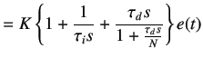 | (5.55) | |
|
where N is large number of the order of 100. By maping controller given in equation 5.55 to the discrete time domain using backward difference formula, we get
| ||
| 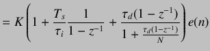 | (5.56) | |
| 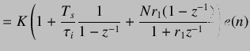 | (5.57) | |
|
where
| ||
| 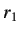 | 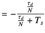 | (5.58) |
|
On cross multiplying, we obtain
| ||
| 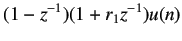 | 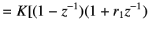 | |
| 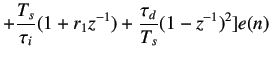 | (5.59) | |
|
Simplifying and then by using shifting theorem, we obtain
| ||
| 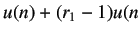 | ||
| 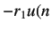 | 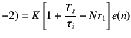 | |
| 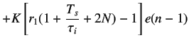 | ||
| 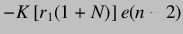 | (5.60) | |
|
Hence
| ||
| 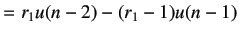 | ||
| 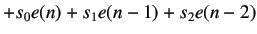 | (5.61) | |
|
where
| ||
| 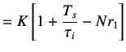 | (5.62) | |
| 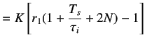 | (5.63) | |
| 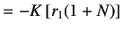 | (5.64) | |